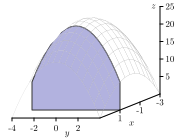
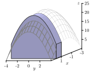
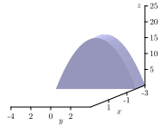
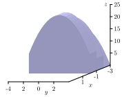
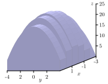

How do we evaluate a double integral over a rectangle as an iterated integral, and why does this process work?
Recall that we defined the double integral of a continuous function \(f = f(x,y)\) over a rectangle \(R = [a,b] \times [c,d]\) as
\begin{equation*}
\iint_R f(x,y) \, dA = \lim_{m,n \to \infty} \sum_{j=1}^n \sum_{i=1}^m f\left(x_{ij}^*, y_{ij}^*\right) \cdot \Delta A,
\end{equation*}
where the different variables and notation are as described in Section11.1. Thus \(\iint_R f(x,y) \, dA\) is a limit of double Riemann sums, but while this definition tells us exactly what a double integral is, it is not very helpful for determining the value of a double integral. Fortunately, there is a way to view a double integral as an iterated integral, which will make computations feasible in many cases.
The viewpoint of an iterated integral is closely connected to an important idea from single-variable calculus. When we studied solids of revolution, such as the one shown in Figure11.2.1, we saw that in some circumstances we could slice the solid perpendicular to an axis and have each slice be approximately a circular disk. From there, we were able to find the volume of each disk, and then use an integral to add the volumes of the slices. In what follows, we are able to use single integrals to generalize this approach to handle even more general geometric shapes.
A solid of revolution.
Figure11.2.1.A solid of revolution.
Preview Activity11.2.1.
Let \(f(x,y) = 25-x^2-y^2\) on the rectangular domain \(R = [-3,3] \times [-4,4]\text{.}\)
As with partial derivatives, we may treat one of the variables in \(f\) as constant and think of the resulting function as a function of a single variable. Now we investigate what happens if we integrate instead of differentiate.
Choose a fixed value of \(x\) in the interior of \([-3,3]\text{.}\) Let
What is the geometric meaning of the value of \(A(x)\) relative to the surface defined by \(f\text{.}\) (Hint: Think about the trace determined by the fixed value of \(x\text{,}\) and consider how \(A(x)\) is related to the image at left in Figure11.2.2.)

Left: A cross section with fixed \(x\text{.}\) Right: A cross section with fixed \(x\) and \(\Delta x\text{.}\)

Left: A cross section with fixed \(x\text{.}\) Right: A cross section with fixed \(x\) and \(\Delta x\text{.}\)
Figure11.2.2.Left: A cross section with fixed \(x\text{.}\) Right: A cross section with fixed \(x\) and \(\Delta x\text{.}\)
For a fixed value of \(x\text{,}\) say \(x_i^*\text{,}\) what is the geometric meaning of \(A(x_i^*) \ \Delta x\text{?}\) (Hint: Consider how \(A(x_i^*) \Delta x\) is related to the image at right in Figure11.2.2.)
Since \(f\) is continuous on \(R\text{,}\) we can define the function \(A = A(x)\) at every value of \(x\) in \([-3,3]\text{.}\) Now think about subdividing the \(x\)-interval \([-3,3]\) into \(m\) subintervals, and choosing a value \(x_i^*\) in each of those subintervals. What will be the meaning of the sum \(\sum_{i=1}^m A(x_i^*) \ \Delta x\text{?}\)
Explain why \(\int_{-3}^3 A(x) \, dx\) will determine the exact value of the volume under the surface \(z = f(x,y)\) over the rectangle \(R\text{.}\)
Subsection11.2.1Iterated Integrals
The ideas that we explored in Preview Activity11.2.1 work more generally and lead to the idea of an iterated integral. Let \(f\) be a continuous function on a rectangular domain \(R = [a,b] \times [c,d]\text{,}\) and let
The function \(A = A(x)\) determines the value of the cross sectional area (by area we mean signed area) in the \(y\) direction for the fixed value of \(x\) of the solid bounded between the surface defined by \(f\) and the \(xy\)-plane.

Summing volumes of cross section slices.

Summing volumes of cross section slices.

Summing volumes of cross section slices.
Figure11.2.3.Summing volumes of cross section slices.
The value of this cross sectional area is determined by the input \(x\) in \(A\text{.}\) Since \(A\) is a function of \(x\text{,}\) it follows that we can integrate \(A\) with respect to \(x\text{.}\) In doing so, we use a partition of \([a, b]\) and make an approximation to the integral given by
where \(x_i^*\) is any number in the subinterval \([x_{i-1},x_i]\text{.}\) Each term \(A(x_i^*) \Delta x\) in the sum represents an approximation of a fixed cross sectional slice of the surface in the \(y\) direction with a fixed width of \(\Delta x\) as illustrated in Figure11.2.3. We add the signed volumes of these slices as shown in the frames in Figure11.2.3 to obtain an approximation of the total signed volume.
As we let the number of subintervals in the \(x\) direction approach infinity, we can see that the Riemann sum \(\sum_{i=1}^m A(x_i^*) \Delta x\) approaches a limit and that limit is the sum of signed volumes bounded by the function \(f\) on \(R\text{.}\) Therefore, since \(A(x)\) is itself determined by an integral, we have
\begin{equation*}
\iint_R f(x,y) \, dA = \lim_{m \to \infty} \sum_{i=1}^m A(x_i^*) \Delta x = \int_a^b A(x) \, dx = \int_a^b \left( \int_c^d f(x,y) \, dy \right) \, dx.
\end{equation*}
Hence, we can compute the double integral of \(f\) over \(R\) by first integrating \(f\) with respect to \(y\) on \([c, d]\text{,}\) then integrating the resulting function of \(x\) with respect to \(x\) on \([a, b]\text{.}\) The nested integral
\begin{equation*}
\int_a^b \left( \int_c^d f(x,y) \, dy \right) \, dx = \int_a^b \int_c^d f(x,y) \, dy \, dx
\end{equation*}
is called an iterated integral, and we see that each double integral may be represented by two single integrals.
We made a choice to integrate first with respect to \(y\text{.}\) The same argument shows that we can also find the double integral as an iterated integral integrating with respect to \(x\) first, or
The fact that integrating in either order results in the same value is known as Fubinis Theorem.
Fubinis Theorem.
If \(f = f(x,y)\) is a continuous function on a rectangle \(R = [a,b] \times [c,d]\text{,}\) then
\begin{equation*}
\iint_R f(x,y) \, dA = \int_c^d \int_a^b f(x,y) \, dx \, dy = \int_a^b \int_c^d f(x,y) \, dy \, dx.
\end{equation*}
Fubinis theorem enables us to evaluate iterated integrals without resorting to the limit definition. Instead, working with one integral at a time, we can use the Fundamental Theorem of Calculus from single-variable calculus to find the exact value of each integral, starting with the inner integral.
Activity11.2.2.
Let \(f(x,y) = 25-x^2-y^2\) on the rectangular domain \(R = [-3,3] \times [-4,4]\text{.}\)
Viewing \(x\) as a fixed constant, use the Fundamental Theorem of Calculus to evaluate the integral
Note that you will be integrating with respect to \(y\text{,}\) and holding \(x\) constant. Your result should be a function of \(x\) only.
Next, use your result from (a) along with the Fundamental Theorem of Calculus to determine the value of \(\int_{-3}^3 A(x) \, dx\text{.}\)
What is the value of \(\iint_R f(x,y) \, dA\text{?}\) What are two different ways we may interpret the meaning of this value?
Activity11.2.3.
Let \(f(x,y) = x+y^2\) on the rectangle \(R = [0,2] \times [0,3]\text{.}\)
Evaluate \(\iint_R f(x,y) \, dA\) using an iterated integral. Choose an order for integration by deciding whether you want to integrate first with respect to \(x\) or \(y\text{.}\)
Evaluate \(\iint_R f(x,y) \, dA\) using the iterated integral whose order of integration is the opposite of the order you chose in (a).
Subsection11.2.2Summary
We can evaluate the double integral \(\iint_R f(x,y) \, dA\) over a rectangle \(R = [a,b] \times [c,d]\) as an iterated integral in one of two ways:
-.
\(\int_a^b \left( \int_c^d f(x,y) \, dy \right) \, dx\text{,}\) or
This process works because each inner integral represents a cross-sectional (signed) area and the outer integral then sums all of the cross-sectional (signed) areas. Fubinis Theorem guarantees that the resulting value is the same, regardless of the order in which we integrate.
Exercises11.2.3Exercises
1.
Evaluate the iterated integral \(\int_{0}^{1} \int_{0}^{1} 3x^2y^3 \, dx dy\)
2.
Evaluate the iterated integral \(\int_{1}^{2} \int_{3}^{4} (2x + y)^{-2} \: dy dx\)
3.
Find \(\int_{1}^{4} \int_{8}^{14}( x + \ln y) \,dydx\)
Calculate the double integral \(\int \int_{\mathbf{R}} (6x + 8y + 48 )\: dA\) where \(\mathbf{R}\) is the region: \(0 \leq x \leq 4, 0 \leq y \leq 3\text{.}\)
6.
Calculate the double integral \(\int \int_{\mathbf{R}} x \cos(2x + y) \: dA\) where \(\bf{R}\) is the region: \(0 \leq x \leq \frac{\pi}{6}, 0 \leq y \leq \frac{\pi}{4}\)
7.
Consider the solid that lies above the square (in the xy-plane) \(R = [0, 2] \times [0, 2]\text{,}\)
and below the elliptic paraboloid \(z = 81 - x^{2} - 4y^2\text{.}\)
(A) Estimate the volume by dividing R into 4 equal squares and choosing the sample points to lie in the lower left hand corners.
(B) Estimate the volume by dividing R into 4 equal squares and choosing the sample points to lie in the upper right hand corners..
(C) What is the average of the two answers from (A) and (B)?
(D) Using iterated integrals, compute the exact value of the volume.
8.
If \(\displaystyle \int_{3}^{6} f(x) \: dx = -2\) and \(\displaystyle \int_{4}^{7} g(x) \: dx = 4\text{,}\) what is the value of \(\displaystyle \int\!\!\int_{D} f(x)\!g(y) \: dA\) where \(D\) is the rectangle: \(3 \leq x \leq 6, \ \ 4 \leq y \leq 7\text{?}\)
9.
Find the average value of \(f(x,y) = 5 x^2 y^3\) over the rectangle R with vertices \((-2,0), (-2,2), (2,0), (2,2)\text{.}\)
Average value =
10.
Find the average value of \(f(x,y) = 2 e^{ y} \sqrt{x+e^{ y}}\) over the rectangle \(R = [0,6] \times [0,8]\text{.}\)
Average value =
11.
Evaluate each of the following double or iterated integrals exactly.
\(\displaystyle \int_1^3 \left( \int_2^5 xy \, dy \right) \, dx\)
\(\iint_R \sqrt{2x + 5y} \, dA\text{,}\) where \(R = [0,2]\times[0,3]\text{.}\)
12.
The temperature at any point on a metal plate in the \(xy\) plane is given by \(T(x,y) = 100-4x^2 - y^2\text{,}\) where \(x\) and \(y\) are measured in inches and \(T\) in degrees Celsius. Consider the portion of the plate that lies on the rectangular region \(R = [1,5] \times [3,6]\text{.}\)
Write an iterated integral whose value represents the volume under the surface \(T\) over the rectangle \(R\text{.}\)
Evaluate the iterated integral you determined in (a).
Find the area of the rectangle, \(R\text{.}\)
Determine the exact average temperature, \(T_{\operatorname{AVG}(R)}\text{,}\) over the region \(R\text{.}\)
13.
Consider the box with a sloped top that is given by the following description: the base is the rectangle \(R = [1,4] \times [2,5]\text{,}\) while the top is given by the plane \(z = p(x,y) = 30 - x - 2y\text{.}\)
Write an iterated integral whose value represents the volume under \(p\) over the rectangle \(R\text{.}\)
Evaluate the iterated integral you determined in (a).
What is the exact average value of \(p\) over \(R\text{?}\)
If you wanted to build a rectangular box (with an identical base) that has the same volume as the box with the sloped top described here, how tall would the rectangular box have to be?